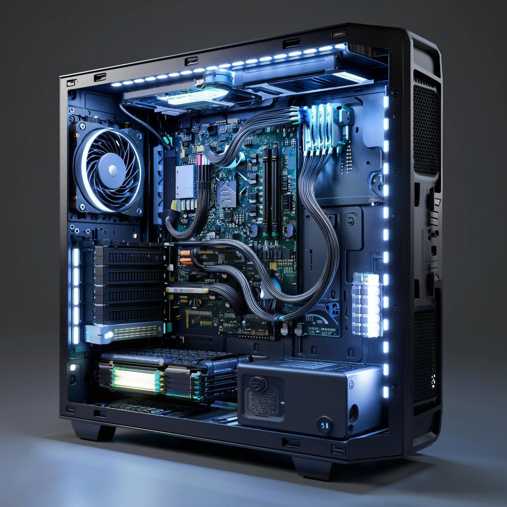
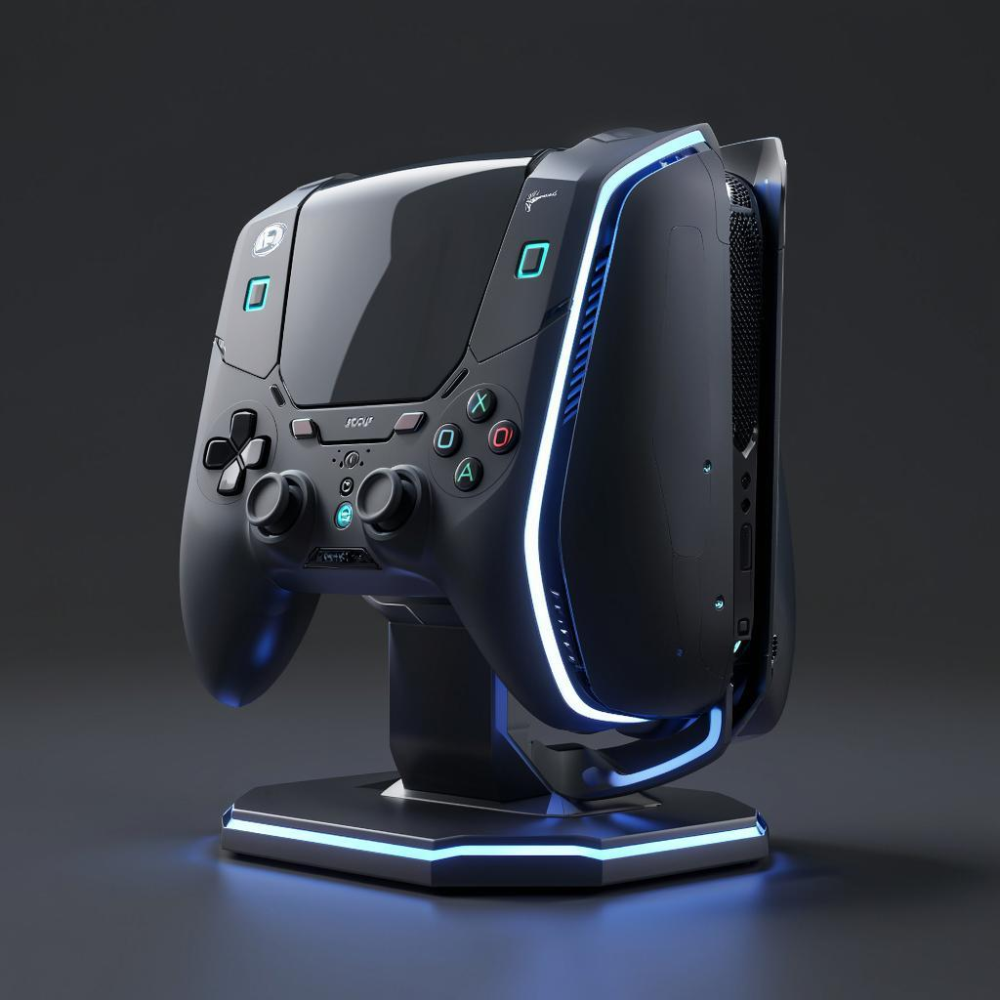
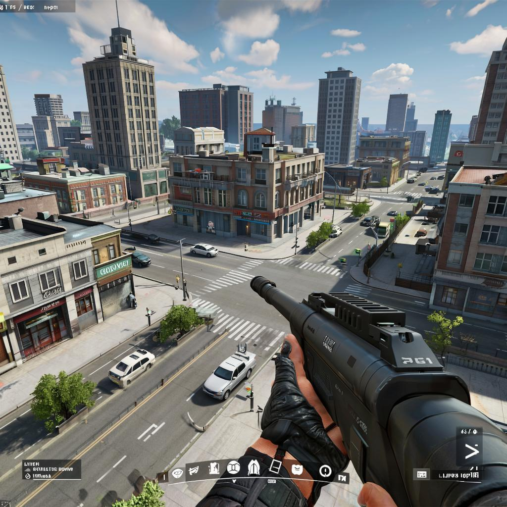
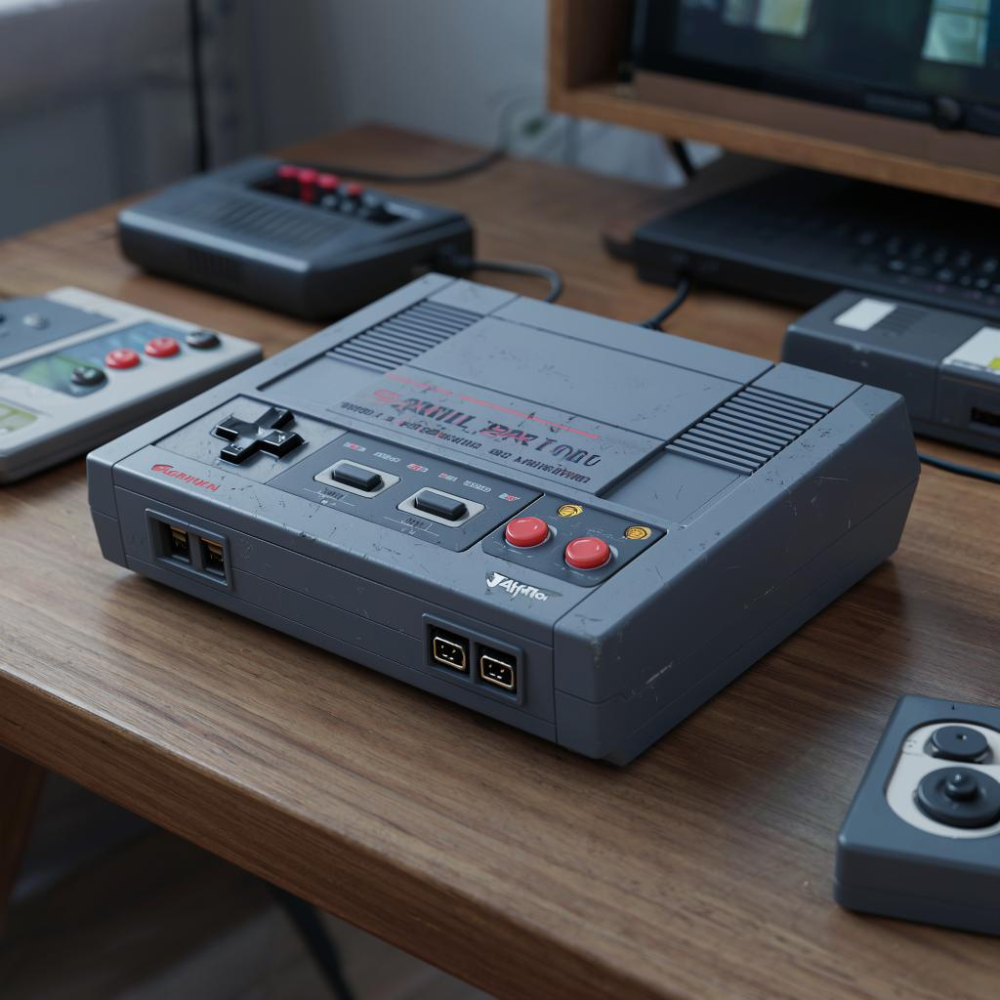
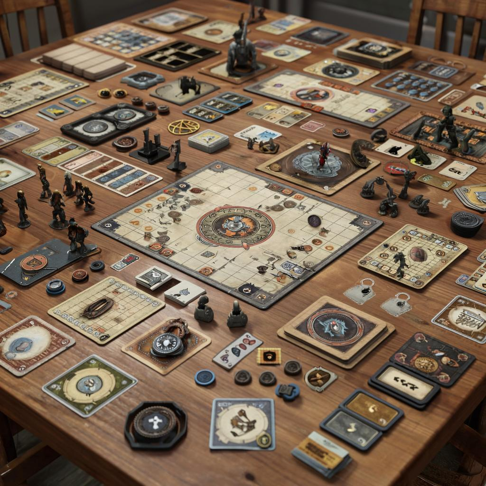

Ты геймер? Готов играть сутки напролет? Хочешь поиграть в новую хайповую игру, но комп не тянет, а консоли нет? Хочешь позависать в онлайн-игре, чтобы никто не отвлекал? Или, может, интересуешься ретрогеймингом, но эмуляторам не доверяешь? Или просто хочется найти друзей по интересам и позависать в приятной обстановке? Тебе точно к нам!

Мы следим за обновлениями в мире компьютерного железа и регулярно обновляем наши компьютеры, чтобы вы всегда могли сыграть даже в самые требовательные тайтлы. Все процессоры, видеокарты и вот это вот все - по последнему слову техники! Так что если не хватает средств на новую видяху, ждем. У нас они есть, к вашим услугам)

Живешь перед телеком с геймпадом в руках? Приглашаем в гости! У нас тебя ждут самые современные модели консолей от Cony, Ricrosoft и Mentendo! Все эксклюзивы, какие хочешь, по приемлемой цене! Весь некстген мира ждет, когда ты его протестируешь!

Любишь Count Strike 3? А Vita 2? Как насчет Black Sea? Или, может, The Elder Manuscripts Online? Или любой другой онлайн-игры? Они все у нас! В любом жанре, в идеальном качестве. Наш Интернет всегда работает отлично, так что фризов, вылетов и прочего можно не бояться. Стабильное подключение - наше онлайн-кредо!

Мы не забыли о фанатах ретро-игр. Возиться с эмуляторами старых консолей и компьютеров бывает сложно, и не все они стабильно работают. Так что у нас в клубе вас ожидают настоящие ретро-платформы на любой вкус - от Avari 3800, ZY Spectrus и Commedar 64 до CBox 360 и GS3. Да, и компьютеры, и консоли! Имеются также аркадные автоматы, а еще можно арендовать портативки! Так что если вы интересуетесь классикой или решили вспомить игровое детство, мы вас ждем!

Глаза устали от экрана, а поиграть хочется? Или просто есть желание посидеть за столом в кругу едиомышленников? Настолки - отличный вариант! У нас есть и "обычные" настольные игры, и настольные ролевые (расписание игровых сессий вывешиваем в соцсетях), и книги-игры. Все, что угодно для счастливой настольной жизни!
Клуб работает круглосуточно, ценники днем и ночью одинаковы. Цены указаны за час игры. Наши услуги стоят: